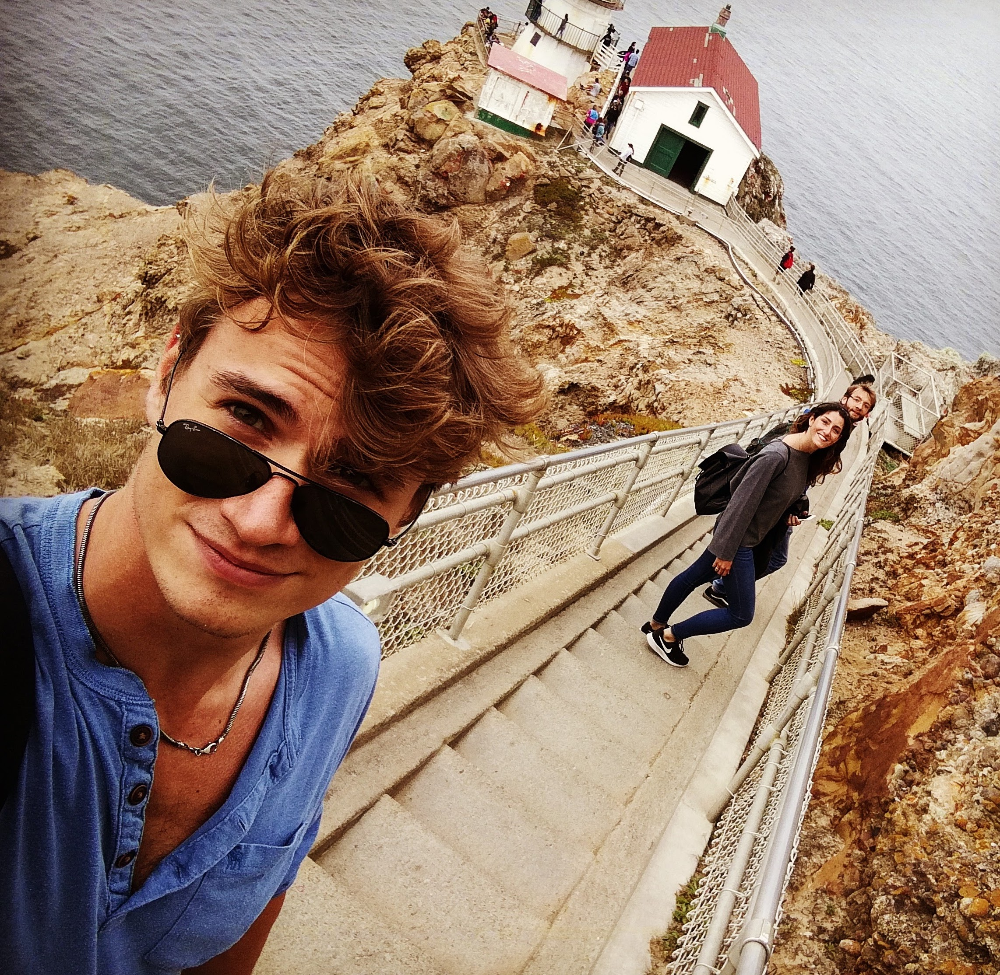

Luigi Sabetta
AI/ML Researcher | Applied Scientist
Physicist by training, AI researcher by profession. I am interested in developing machine learning methods that are effective, efficient, and grounded in rigorous experimentation.
About Me
My research journey began in particle physics at Sapienza University of Rome, where I earned my Ph.D. while working with the ATLAS Collaboration at CERN. There, I worked on large-scale data analysis, statistical modeling, and machine learning applications for high-energy physics.
After my Ph.D., I joined Leonardo Labs as an AI Research Fellow, focusing on continual learning and machine unlearning. My work involved developing methods to mitigate catastrophic forgetting, remove learned information from models, and investigate these challenges in both computer vision and large language models.
More recently, I have been working on quantitative research, exploring predictive modeling with transformer-based architectures and graph neural networks, alongside model evaluation and validation in noisy, non-stationary environments.
Across these experiences, I have remained interested in the intersection of research and practical applications, combining mathematical reasoning, experimentation, and software development to address challenging problems.
Research Interests
My interests span continual learning, machine unlearning, large language models, predictive modeling, and efficient machine learning. I am particularly interested in how models adapt to changing information, how learned knowledge can be selectively removed, and how machine learning systems can be made more computationally efficient and reliable.
Beyond Research
Outside research, I enjoy skiing, strength training, and creative hobbies. I previously competed in powerlifting, and I also enjoy painting miniatures, playing Magic: The Gathering, and exploring tabletop role-playing games such as Dungeons & Dragons.